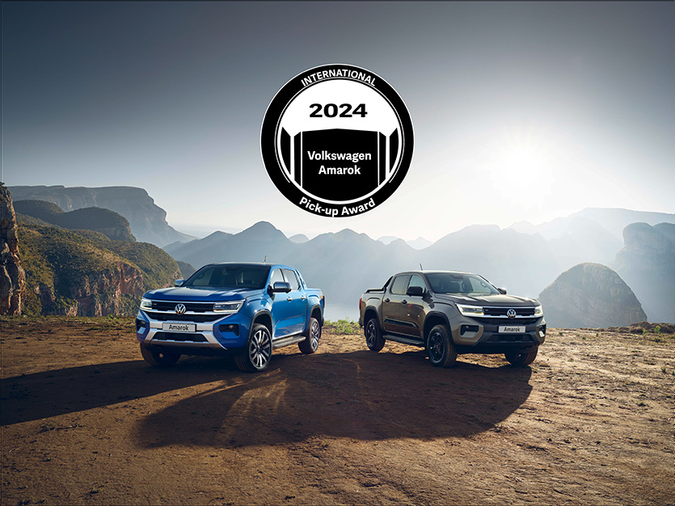
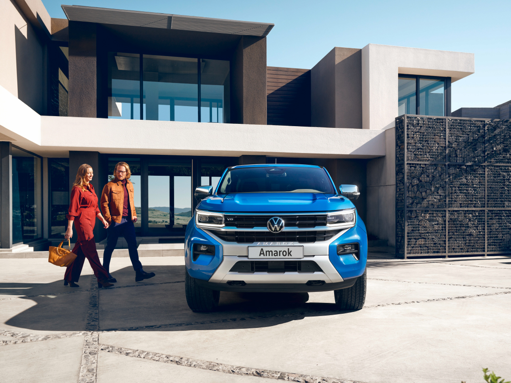
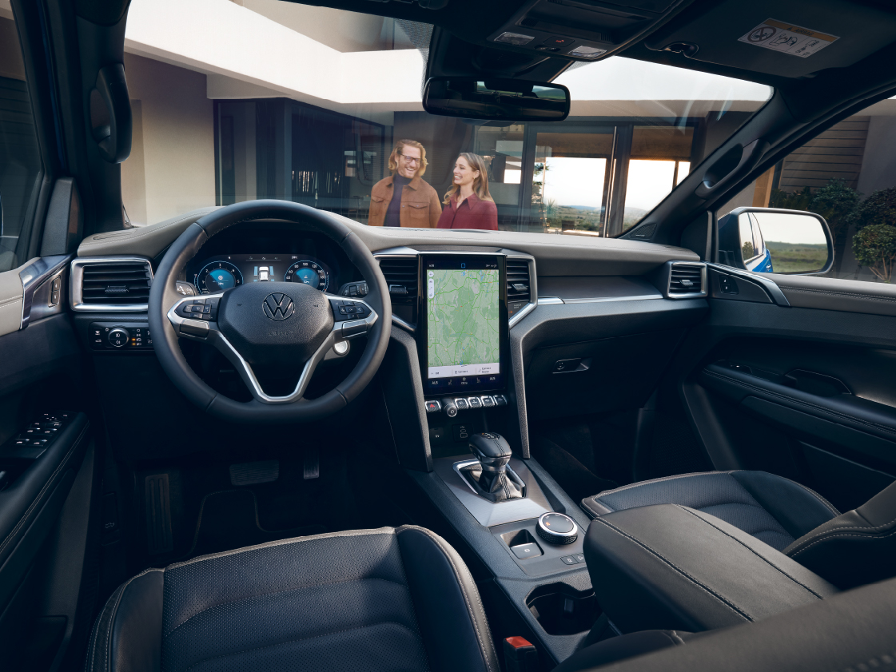
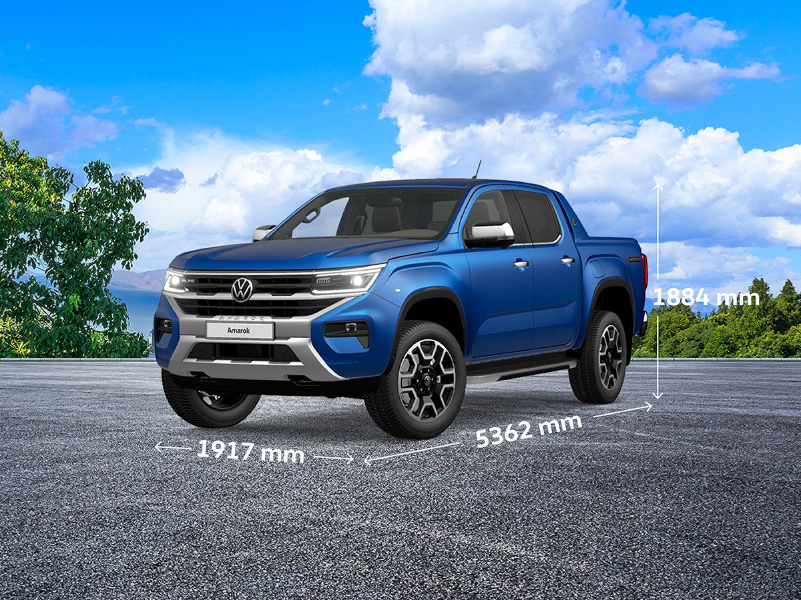
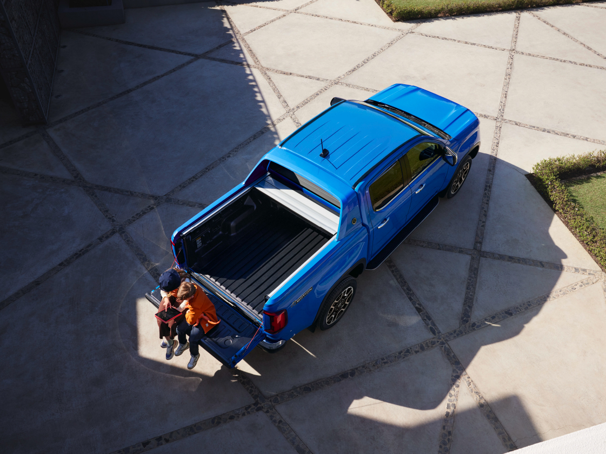
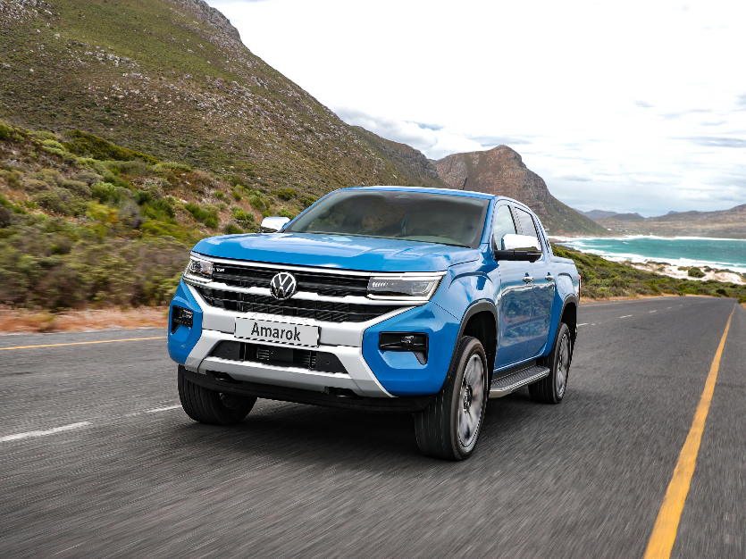

Yeni Amarok Aventura
Yeni Amarok Her haliyle “Yılın Pick-up’ı”.

Her haliyle güçlü, her haliyle akıllı, her haliyle çekici, her haliyle “Yılın Pick-up’ı”! Yeni Amarok yenilenen özellikleri ve teknolojisi ile “Uluslararası Pick-up Ödülleri”nde yılın en iyisi oldu. Bu ödüle toplamda 3. kez layık görülen Amarok, yeni modeliyle birlikte zirvedeki yerini korudu. Hepinize çok teşekkür ederiz.
Onu anlatmaya kelimeler yetmez

Kusursuz far tasarımı
Yeni Amarok’un sürüş ortamına uygun tepkiler veren, birbirinden bağımsız hareket eden ve yüksek teknolojik görünümünü vurgulayan IQ. LIGHT – LED Matrix farlar hem size hem de karşıdan gelen sürücüler için güvenli bir sürüş sağlar.
Teknoloji ve konforun kusursuz uyumu

Yollar bitmesin isteyeceksiniz
Yeni Amarok’un savona deri koltuk kaplaması ve ısıtmalı ön koltukları size ayrılmak istemeyeceğiniz bir konfor alanı yaratır.
O, bildiğiniz gibi değil

Herkese yetecek kadar alan var
Yeni Amarok’un tüm ölçüleri değişti. Uzunluğu 5.362 mm’ye ulaşan Yeni Amarok, 1.917 mm’lik genişliğiyle size daha çok alan sunarken 1.884 mm’lik yüksekliğiyle de içinde rahat etmenizi sağlıyor. Yeni boyutları ve 1.651 mm’lik yükleme alanıyla Yeni Amarok, daha fazla eşya taşımaya hazır. 800mm s udan geçme özelliğine sahip Yeni Amarok aynı zamanda 26 derece uzaklaşma, 30 derece yaklaşma ve 21 derece rampa açısına sahiptir.
Her şey kontrol altında

Park etmek çocuk oyuncağı
Yeni Amarok, ön ve arka park sensörü ile geri görüş kamerasına sahip. Şehirde ya da doğada park etmek hiç olmadığı kadar kolay.
Altı silindirli V6 motor ve 4MOTION

Her haliyle güçlü
3.0 V6 motor seçeneğiyle 600 Nm tork ve 240 hp güç üreten yüksek performanslı Yeni Amarok, herkesi kendine hayran bırakıyor. Tabii onu eşsiz kılan özelliklerden biri de sahip olduğu 4MOTION® 4 tekerlekten çekiş sistemi. Şanzımanın arka tarafında yer alan 4Motion sistemi, planet dişli grubunun kullanıldığı entegre bir arazi redüksiyona sahiptir. Sistem, torku otomatik olarak ön ve arka tekerleklere dağıtıyor. Arazi koşullarına 4MOTION® ile meydan okuyan Yeni Amarok, her türlü zorluğun üstesinden kolayca geliyor.
Volkswagen Hakkında Modeller Ve Fiyatlar İletişim Sosyal Medya
İkinci El Araçlar Tüm Modeller Yetkili Satıcı Facebook
Ticari Araçlar SUV Modeller Online Servis Instagram
Satış Sonrası Hizmetler Araç Fiyatları İletişim Ve Destek Twitter
Kampanyalar Aksesuarlar Bilgi Formu Youtube
|